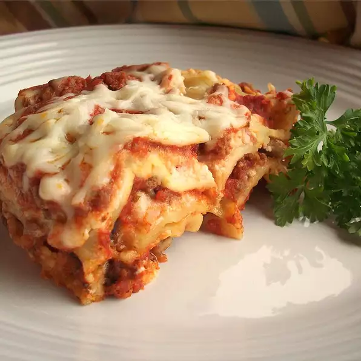

Classic Lasagna

A traditional lasagna, with about half the time and effort! I always cook extra to have leftovers, but the more I cook, the more they eat! Serve with garlic toast and salad.
Ingredients
- 1 pound ground beef
- 1 pound bulk Italian sausage
- 1/2 cup warm water
- cup warm water
- 1 pinch basil
- 2 teaspoons garlic powder
- 1 tablespoon dried oregano
- 1 1/2 teaspoons dried sage
- 2 teaspoons ground black pepper
- 2 tablespoons minced garlic
- 1 tablespoon dried onion flakes
- 2 (14 ounce) jars marinara sauce
- 1 (16 ounce) package lasagna noodles
- ounces ricotta cheese
- 1 pound mozzarella cheese, shredded
back to home